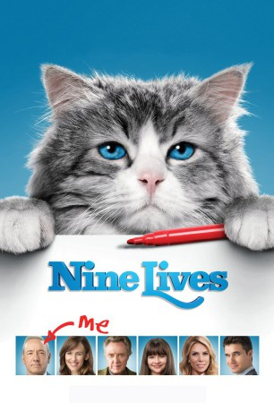
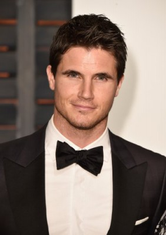
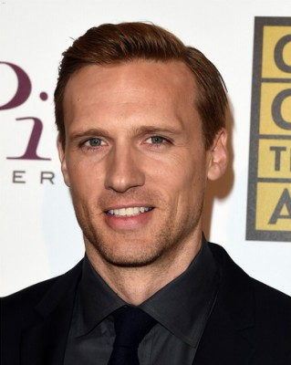

#5849 Voll verkatert
 
 IMDB-Wertung: 5.3 / 10
IMDB-Wertung: 5.3 / 10  Metascore: 0
Metascore: 0 
Tom Brand (Kevin Spacey) ist ein knallharter, stinkreicher Geschäftsmann, der nicht viel Rücksicht auf seine Familie – bestehend aus Frau Lara (Jennifer Garner), Tochter Rebecca (Malina Weissman) und Sohn David (Robbie Amell) – nimmt. Als sich seine Tochter zum 11. Geburtstag eine Katze wünscht und ihm partout kein anderes Geschenk einfällt, entschließt sich Tom, ihr trotz seiner vehementen Abneigung gegenüber Katzen einen Stubentiger zu besorgen. Sein Weg führt ihn in die Tierhandlung des mysteriösen Sonderlings Felix Perkins (Christopher Walken), der ihm einen majestätischen Kater namens Mr. Kuschelpuschel verkauft. Doch auf dem Weg zur Geburtstagsparty hat Tom einen Unfall und verliert das Bewusstsein. Als er aus seiner Ohnmacht erwacht, findet er sich unerklärlicherweise im Körper von Mr. Fuzzypants wieder. Als Vierbeiner wird Tom von seiner Tochter nach Strich und Faden gehegt und gepflegt, während er verzweifelt nach einem Weg sucht, seine menschliche Form zurückzuerlangen...
Jahr: 2016
Dauer: 87 Minuten
FSK: 0
Land: Frankreich Studio: Universum FilmTonspuren: DTS - ,
Untertitel: Deutsch,
Auflösung: 1080p (1920x1040) Größe: 5918 MB
Genre: Komödie, Fantasy, Familie
Regisseur:  Barry Sonnenfeld
Barry Sonnenfeld
Drehbuch: Robert Louis Stevenson
Soundtrack:
Darsteller:
 Kevin Spacey als Tom Brand
Kevin Spacey als Tom Brand Jennifer Garner als Lara Brand
Jennifer Garner als Lara Brand-  Robbie Amell als David Brand
 Cheryl Hines als Madison Camden
Cheryl Hines als Madison Camden Mark Consuelos als Ian Cox
Mark Consuelos als Ian Cox- Malina Weissman als Rebecca Brand
 Christopher Walken als Felix Perkins
Christopher Walken als Felix Perkins- Talitha Bateman als Nicole Camden
-  Teddy Sears als Josh Myers
 Jay Patterson als Benson
Jay Patterson als Benson- Jewelle Blackman als Doctor Cole
- Serge Houde als Stein
- Mark Camacho als Josh Boone
- Kyle Gatehouse als Nerdy Employee
- Tristan D. Lalla als Hefty Guard
- Brad Aldous als Lanky Guard
- Julianne Jain als Banker
 Jason Cavalier als Skydiving Coach
Jason Cavalier als Skydiving Coach Jason Blicker als EMT #1
Jason Blicker als EMT #1 Kwasi Songui als EMT #2
Kwasi Songui als EMT #2- Emilee Veluz als Nurse
- David-Alexandre Coiteux als Samson - Security MIB
 Chloe Sonnenfeld als Additional Cat Voices
Chloe Sonnenfeld als Additional Cat Voices Barry Sonnenfeld als Additional Cat Voices
Barry Sonnenfeld als Additional Cat Voices- Lil Bub als IanCat
- Talking Tom als Talking Tom
- Sam Chamas als Guest at the Banquet , uncredited
- Satine Scarlett Montaz als Guest at Birthday party , uncredited
- Galia Oliel-Sabbag als Rebecca's Friend , uncredited
- Chris Wilding als Chirpy Employee
- Ellen David als Tom's Secretary
- Camille Ross als Monica Batiste
- Jack Hallett als Mayor Edwards
- Robert Harrison als EMT #3
- Lori Graham als Anchor
- Sook Hexamer als Japanese Woman
- Melissa Duncan-Seon als Nurse #2
- Meghan Gabruch als Ian's Assistant
- Jon Olson als TomCat Sounds
- Jean als TomCat
- Philmon als TomCat
- Connery als TomCat
- Roxie als TomCat
- Yuri als TomCat
- Nala the Cat als Nala the Cat
- Waffles the Cat als Waffles the Cat
- Pudge the Cat als Pudge the Cat
- Hamilton the Hipster Cat als Hamilton the Hipster Cat
- Henri le Chat Noir als Henri, le Chat Noir
- Peter Andrianopoulos als Firebrand Guard , uncredited
Datei: X:\2016(N-Z)\Voll verkatert (2016, FSK0, 1920x1040).mkv seit 29.03.2017
Festplatte: HD 2016(A-Z)
 Es gibt insgesamt 182 Filme in der Gruppe '2016(N-Z)'
Es gibt insgesamt 182 Filme in der Gruppe '2016(N-Z)'